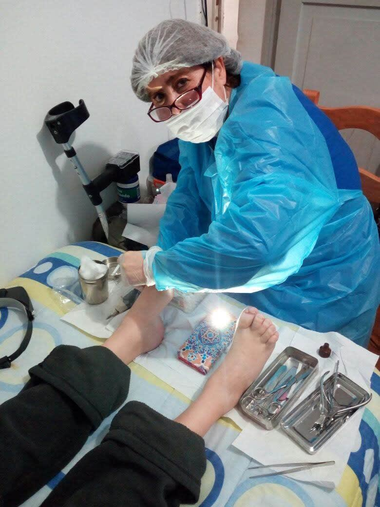

Podología clínica, pedicura y terapias alternativas en La Florida. También vamos a tu domicilio. Atención solo con cita previa.
Pide tu hora por WhatsApp
Los pies cargan todo tu cuerpo, y a través de ellos se pueden detectar problemas de salud. Ya sea una molestia puntual o un problema crónico, te orientamos y te atendemos.
Entre los motivos de consulta que atiende:
Pasaje Tierra Amarilla 8832, La Florida. Solo con cita previa.